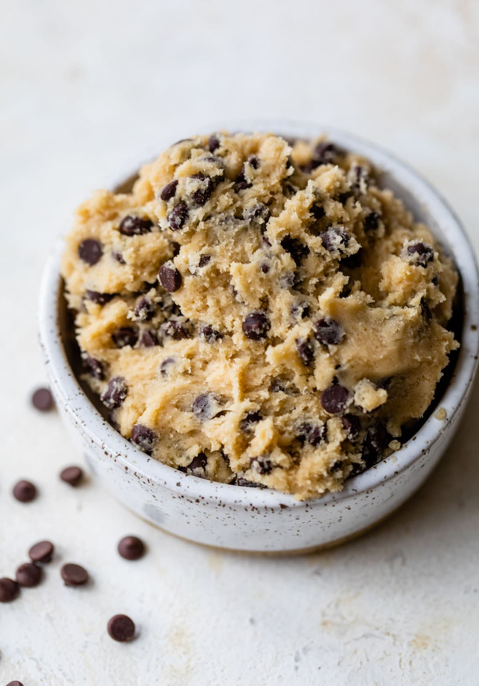

Ingredients
- 2 1/4 cups all-purpose flour
- 1 cup unsalted butter (room temp)
- 1 1/4 cup packed light brown sugar
- 1/4 cup granulated sugar
- 2 teaspoons pure vanilla extract
- 1 teaspoon salt
- 2 tablespoons milk (may add more if needed)
- 2 cups mini semisweet chocolate chips
Instructions
- Heat treat the flour for safe consumption. Place in a large microwave-safe bowl. Microwave on high in 20-second intervals, stir between each until it reached 165F. let it cools completely
- Place the butter in a microwave-safe bowl and heat on high just until partially melted, about 30 seconds. Combine the butter with the sugars in a large mixing bowl or the bowl of a stand mixer with the paddle attachment. Beat on medium speed until light and fluffy.
- Add the salt, vanilla, and milk. Beat until well mixed. Add the cooled flour and mix on low speed just until combined.
- Stir in the chocolate chips. Enjoy immediately or chill in the refrigerator to firm up. The cookie dough will keep for up to 1 week in the fridge or 1 month in the freezer.